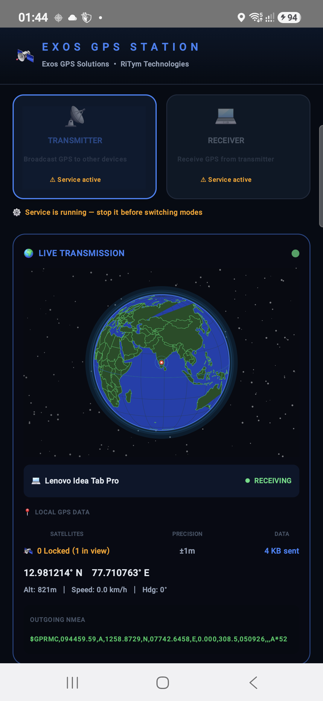
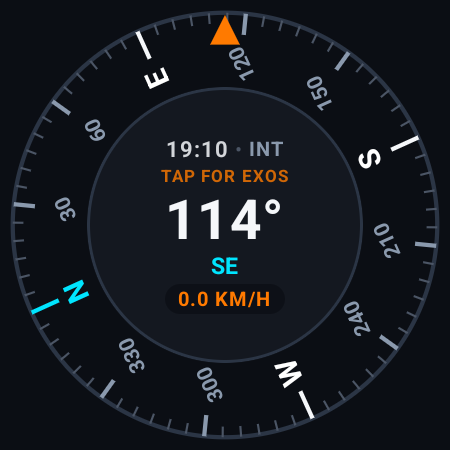
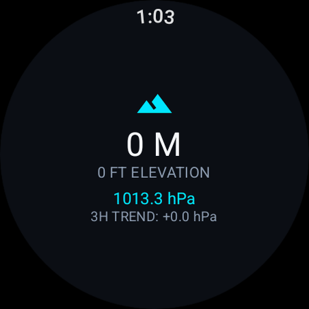
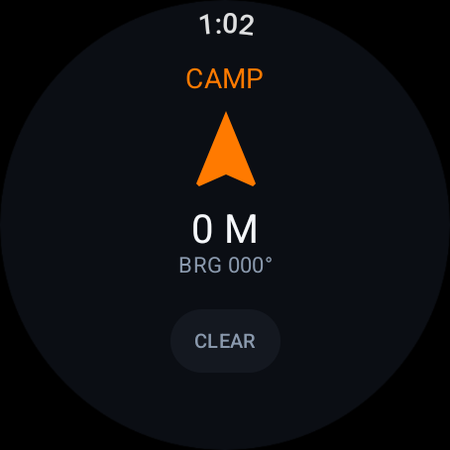
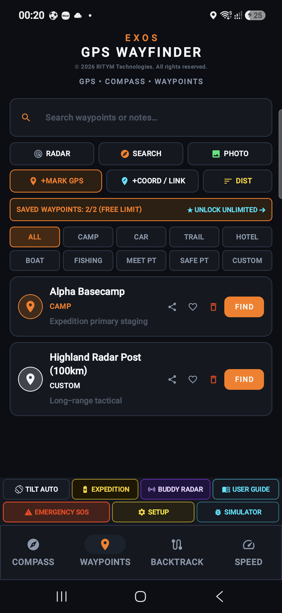
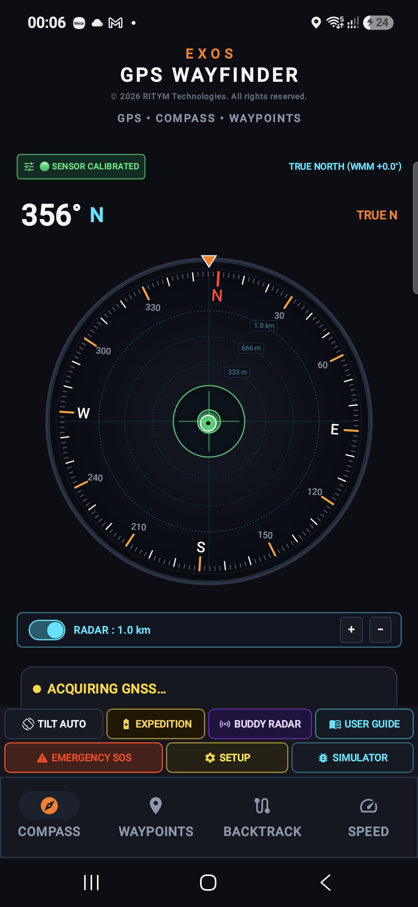
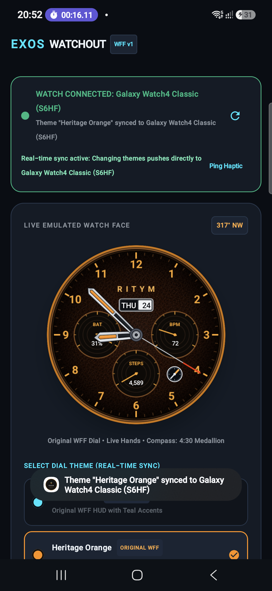

EXOS engineers four specialized software platforms and hardware bridge systems designed for wilderness expeditions, maritime operators, emergency responders, and technical field teams who require guaranteed orientation, satellite bridging, and radio voice without cellular coverage.



Engineered to operate independently or as a coordinated system to conquer the four fundamental demands of off-grid deployment.
A high-precision GNSS satellite bridge connecting external positioning receivers to Android's mock location provider and Windows virtual COM ports.
An offline-first Android navigation handset application featuring 3D tactical compass heading, emergency breadcrumb backtracking, and windshield HUD.
An off-grid digital walkie-talkie connecting teams over Wi-Fi Direct and Bluetooth Low Energy with sub-100ms voice, text chat, and distress beacons.
A standalone Wear OS compass watch face engineered with Google's Watch Face Format (WFF v1), paired with a synchronized phone companion.
EXOS GPS Transceiver serves as a dedicated communications bridge between external GNSS hardware receivers (such as the EXOS-GPS Puck or high-gain marine GPS units) and host computers. It feeds high-precision satellite telemetry into standard applications like Google Maps, ATAK-CIV, and QGIS.
Technical Specifications: Ingestion of GPS, GLONASS, Galileo, BeiDou, and QZSS constellations; sub-meter positioning accuracy; dual Transmitter and Receiver operating modes; virtual COM port multiplexer for Windows desktop integration.



EXOS Wayfinder is an autonomous offline mobile navigation application engineered for wilderness expeditions, night overlanding, and search teams. It operates 100% offline without cellular reception, relying strictly on internal handset sensors and raw satellite fixes.
Technical Specifications: 50Hz sensor fusion, 3D leveling bubble, integrated GPS speedometer and odometer, offline private SQLite database, and foreground battery-optimized tracking service.




EXOS ECHO turns any standard Android smartphone into an off-grid digital walkie-talkie and wilderness mesh transceiver. Connecting devices peer-to-peer via Wi-Fi Direct and Bluetooth Low Energy, it delivers reliable voice communication and text messaging where telecom networks do not reach.
Technical Specifications: Sub-100ms Push-to-Talk latency, 16 kHz HD IMA-ADPCM digital audio compression, 10 cryptographically isolated channels with Dual-Watch standby monitoring, background call ringing with screen locked, and 100% free emergency SOS distress beacon.

Exos Watchout is a standalone Wear OS smartwatch watch face and paired mobile companion application. Engineered natively with Google's Watch Face Format (WFF v1), it delivers glanceable heading guidance, compass telemetry, and biometric indicators directly to your wrist.
Technical Specifications: Google Watch Face Format (WFF v1), standalone Wear OS 4/5 compatibility (Samsung Galaxy Watch 4/5/6/7, Google Pixel Watch 1/2/3), rotating 4:30 compass medallion with 50Hz sensor fusion, and zero battery drain in Always-On Display (AOD) ambient mode.

Discover how our four software platforms operate in the field when commercial networks fail.
Deploy EXOS Transceiver for sub-meter mock location mapping in ATAK, EXOS ECHO for low-latency team voice, and Watchout for hands-free wrist orientation.
Navigate through blizzards with EXOS Wayfinder trail backtracking, track barometric pressure fronts, and verify wrist headings with Exos Watchout.
Broadcast high-precision NMEA-0183 sentences over Bluetooth SPP to Windows navigation laptops running OpenCPN without subscription fees.
Instant peer-to-peer radio mesh network deployment using EXOS ECHO when storm damage, flooding, or grid failures disable cellular infrastructure.
Detailed technical comparison across target platforms, communication protocols, latency, and positioning accuracy.
| Specification Parameter | 1. EXOS Transceiver | 2. EXOS Wayfinder | 3. EXOS ECHO | 4. Exos Watchout | EXOS-GPS Puck (Hardware) |
|---|---|---|---|---|---|
| Primary Function | GNSS Telemetry & Mock Location Bridge | Offline Mobile Navigation & HUD | Off-Grid PTT Voice & Mesh Radio | Wear OS Compass Watch Face | Autonomous GNSS Receiver |
| Supported Platforms | Android 8.0+ & Windows 10/11 | Android 10.0+ Handsets & Tablets | Android 9.0+ Handheld & Tablet | Wear OS 4/5 (Galaxy & Pixel Watch) | Autonomous Embedded Firmware |
| Communications Link | Bluetooth SPP & USB-C Serial | Internal Sensor Fusion / External GNSS | Wi-Fi Direct (P2P) + BLE 5.0+ | Wearable DataLayer & Bluetooth 5.2 | Bluetooth 5.2 Long Range & USB |
| Voice & Audio Latency | N/A (Telemetry Stream Only) | Audio Alerts & Voice Cues | < 100 ms (16 kHz HD IMA-ADPCM) | Haptic Alerts & Chimes | N/A |
| Satellite Constellations | GPS, GLONASS, Galileo, BeiDou, QZSS | All Handset GNSS Constellations | Offline GPS Coordinate Share | Internal Watch Sensors & Handset GPS | Multi-Band L1/L5 GNSS Receiver |
| System Mock Location | Smart Guided Mock Provider | Target Coordinate Ingestion | Tactical Waypoint Plotting | Complication Telemetry Ingestion | Raw NMEA-0183 Output Stream |
| Emergency SOS Distress | Distress Telemetry Packet | Foreground Emergency Flash Beacon | 100% Free Acoustic Alarm & Coordinates | High-Visibility Compass Flare | Autonomous Panic Switch |
| Cellular / Cloud Requirement | 100% Offline (No Data Needed) | 100% Offline (No Data Needed) | 100% Offline (No Data Needed) | 100% Offline (No Data Needed) | 100% Offline (Autonomous) |
Follow these simple steps to join our closed testing fleet on Google Play and begin field trials.
Access credentials for our Google Play closed testing track are managed through our official Google Group. Join the group with your Google Play email address.
Join Testers GroupOpen the Google Play opt-in invitation links for Transceiver, Wayfinder, ECHO, or Watchout to authorize your account for immediate beta app downloads.
Accept Beta Opt-InInstall the applications onto your physical Samsung Galaxy Watch or Android mobile device. Verify offline orientation and direct mesh communications in your local area.
Download Applications